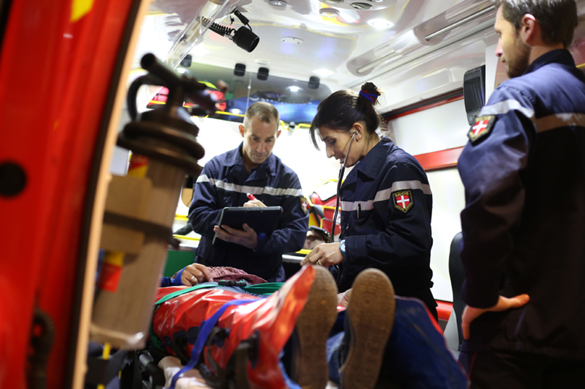
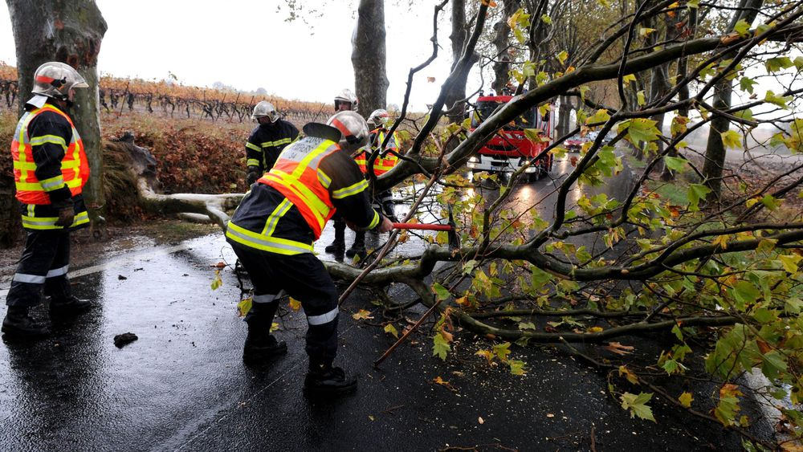

Secours à personne
85% des interventions
Cela inclut le secours d'urgence aux victimes ainsi que les accidents de la circulation.

Incendies
6% des interventions
Les feux d'habitation représentent la plus grand part, suivis de près par les feux sur voie publique, puis par les feux de véhicules et les feux de végétation.

Autres
5% des interventions
Cela inclut les opérations diverses, la protection des biens et de l'environnement, la gestion des risques technologiques et chimiques, ainsi que l'aide à personne.